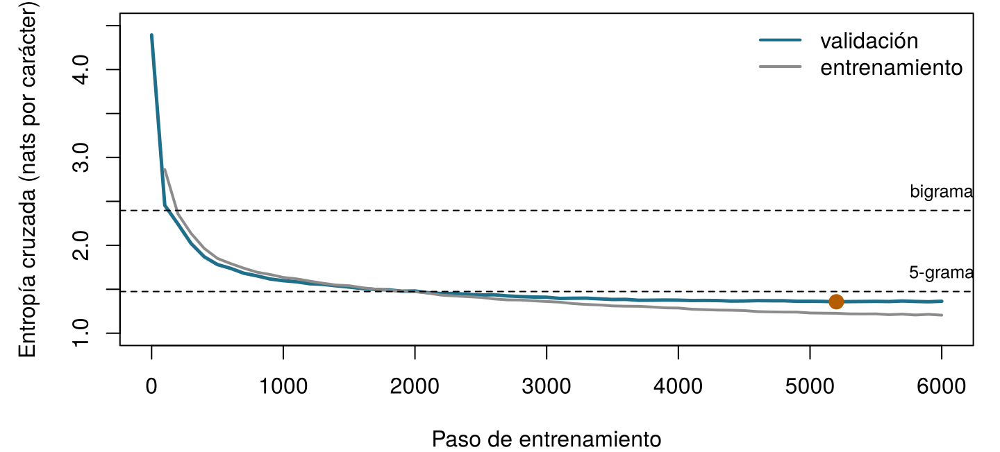

| Modelo | Pesos | Bloques N | Dimensión d | Contexto (tokens) | Vocabulario | Texto de entrenamiento |
|---|---|---|---|---|---|---|
| GPT del navegador (este capítulo, NumPy) | 107 200 | 2 | 64 | 32 | 79 | 217 501 caracteres |
| GPT mayor (este capítulo, PyTorch) | 811 648 | 4 | 128 | 64 | 79 | 217 501 caracteres |
| GPT-2 small (Radford et al. 2019) | 117 millones | 12 | 768 | 1 024 | 50 257 | unos 40 GB de texto web |
| GPT-3 (Brown et al. 2020) | 175 000 millones | 96 | 12 288 | 2 048 | 50 257 | 300 000 millones de tokens vistos |
18 Entrena tu primer GPT
Un GPT se entrena para hacer una sola cosa: predecir lo que viene a continuación. Nuestro modelo predecirá el siguiente carácter. Antes de ver código, juega tú: ¿qué carácter viene a continuación? (Los textos están en inglés, como el libro.)
| Texto hasta ahora | Siguiente carácter |
|---|---|
Notes on Nursin |
|
fresh ai |
|
the sick-roo |
|
Florence Nightingal |
Cómo usar este capítulo
¿Empiezas aquí?
Este capítulo reúne las ideas de los tres capítulos anteriores y del Capítulo 7. En pocas líneas:
- El texto se corta en tokens tomados de un vocabulario \(\mathcal{V}\); los tokens pueden ser palabras, trozos de palabras o caracteres sueltos (Capítulo 15).
- Un modelo de lenguaje asigna una probabilidad a cada posible siguiente token, \(P_\theta(w_t \mid w_{<t})\). Por la regla de la cadena, la probabilidad de un texto entero es el producto de estas probabilidades del siguiente token. Un modelo se evalúa por su entropía cruzada en texto reservado, la media de \(-\log P_\theta(\text{siguiente token observado})\), o, de forma equivalente, por su perplejidad, el número efectivo de opciones entre las que duda. El texto se genera por muestreo, con una temperatura y un top-\(k\) que dan forma a la distribución (Capítulo 16).
- Un transformer convierte cada token en un embedding más una codificación posicional y hace pasar los vectores por bloques de autoatención multicabeza causal y una red feed-forward, cada uno con normalización de capa y una conexión residual. Un GPT es una pila de estos bloques con una máscara causal, entrenada en la predicción del siguiente token (Capítulo 17).
- Los pesos de una red neuronal se aprenden por descenso del gradiente, con gradientes calculados por retropropagación, en lotes, a lo largo de varias épocas; un conjunto de validación muestra cuándo la red empieza a sobreajustar, y la parada temprana conserva los mejores pesos (Capítulo 7, Capítulo 3). Un modelo es una representación simplificada construida con un propósito (Definición 1.3).
| Ejemplo | Quién o qué | Desenlace | Caras que vas a conocer |
|---|---|---|---|
| 1 UCI Sala 7 | 1250 pacientes de UCI en 4 hospitales | variación de la creatinina en 48 h (lesión renal aguda si ≥ 0,3 mg/dL) | Aoife (71 años, sepsis, riesgo limítrofe), Tomás (54 años, riesgo bajo), Priya (38 años, riesgo alto); la Dra. Emma Walsh; Seán, el farmacéutico |
| 2 Ensayo ONCO-1 | 1000 pacientes aleatorizados a quimioterapia o no | reducción del tumor (%) | pacientes #0042 y #0917 |
| 3 HomeBeat | 500 personas que llevan un reloj inteligente en casa | puntuación de estrés, evento de deterioro | Lena |
| 4 CellWorks | 420 lotes de producción de una terapia celular | puntuación de potencia | lote CW-118 |
Los cuatro conjuntos de datos son simulados y pueden descargarse en el apéndice de datos. La presentación completa está en la Sección 1.1.
Este capítulo deja de lado los cuatro ejemplos recurrentes durante una tarde: sus datos son un libro real, de dominio público, escrito en 1859, que no describe a ningún paciente de hoy.
Este capítulo entrena un GPT de principio a fin. Tiene diez secciones y un Laboratorio, seis comprobaciones rápidas, tres widgets “Pruébalo”, un desafío y tres misiones de programación en R y Python. Calcula unas dos horas, más unos minutos de trabajo de tu equipo. En tu navegador se ejecutan dos tipos de código: un GPT completo escrito en NumPy que entrenas tú (Sección 18.5), y un modelo mayor entrenado de antemano que usas para escribir texto (Sección 18.7). Un cuaderno de Jupyter te permite entrenar el mayor en tu portátil o en Google Colab (Sección 18.8).
La notación de un vistazo (solo para consulta)
| Símbolo | Significado | Sección |
|---|---|---|
| \(\mathcal{V}\), \(V = \lvert\mathcal{V}\rvert\) | vocabulario (aquí: los caracteres distintos) y su tamaño | Sección 18.2 |
| \(w_t\) | token (carácter) en la posición \(t\) | Sección 18.2 |
| \(T\), \(B\) | longitud del contexto (caracteres por ventana); tamaño del lote (ventanas por paso) | Sección 18.2 |
| \(d\), \(N\), \(h\) | dimensión del modelo, número de bloques, número de cabezas | Sección 18.4 |
| \(\mathbf{E}\), \(\mathbf{P}\) | matriz de embeddings de tokens (\(V \times d\)); matriz de embeddings de posición (\(T \times d\)) | Sección 18.4 |
| \(\theta\) | todos los pesos del modelo | Sección 18.5 |
| \(\mathcal{L}(\theta)\) | pérdida de entrenamiento: entropía cruzada media sobre todas las posiciones de un lote, en nats | Sección 18.5 |
| \(\mathbf{z}_t\), \(\mathbf{p}_t\) | logits y probabilidades del siguiente carácter en la posición \(t\) | Sección 18.5 |
| \(\nabla_\theta \mathcal{L}\), \(\eta\) | gradiente de la pérdida; tasa de aprendizaje | Sección 18.5 |
| \(\mathbf{m}\), \(\mathbf{v}\), \(\beta_1\), \(\beta_2\) | medias móviles de Adam y sus tasas de decaimiento | Sección 18.5 |
| \(\tau\), \(k\) | temperatura de muestreo; número de tokens que conserva top-\(k\) | Sección 18.7 |
La lista completa está en la página de notación.
18.1 El plan: la misma receta, a escala reducida
Todos los GPT, desde el primero (Radford et al. 2018) hasta los modelos que hay dentro de los asistentes actuales, se construyen con los mismos cinco pasos (Figura 18.1). Reunir texto. Cortarlo en tokens. Entrenar un transformer para predecir el siguiente token en cada posición, por descenso del gradiente sobre la entropía cruzada. Repetir con muchos lotes hasta que la pérdida en texto reservado deje de bajar. Generar muestreando un token cada vez. Lo que separa un modelo didáctico de uno comercial no es la receta sino la escala: la cantidad de texto, el número de pesos y el cálculo invertido en el entrenamiento (Tabla 18.1).
Nuestro modelo mayor tiene 811 648 pesos; GPT-3 tiene unas 216 000 veces más, y durante el entrenamiento vio aproximadamente 24 400 veces más tokens que caracteres vio nuestro modelo. Nada más cambia en la receta. Esa es la idea de este capítulo: una vez que hayas entrenado el pequeño, sabrás qué se hizo, paso a paso, para construir los grandes. Lo que no tendrás es su escala, y el Capítulo 19 explica lo que añaden la escala y varias etapas más de entrenamiento.
18.2 Los datos: caracteres como tokens
18.2.1 El corpus
Notes on Nursing es breve, práctico y lleno de opiniones. Nightingale lo escribió para “las mujeres que tienen a su cargo la salud de otros”, y mucho de lo que dice (aire fresco, luz, silencio, limpieza, observación atenta del enfermo) todavía se enseña. El texto es de dominio público. Usamos la transcripción hecha por los voluntarios de Distributed Proofreaders y distribuida como eBook #12439 por el Proyecto Gutenberg, que sigue una reimpresión de Nueva York de 1898. El script ch18_prepare_corpus.py conserva solo el texto del propio libro: elimina la cabecera y la licencia del distribuidor, las notas del transcriptor, las llamadas a notas al pie y las dos tablas estadísticas del apéndice, convierte las notas al margen de Nightingale en líneas breves propias y une las líneas de cada párrafo. El resultado, notes_on_nursing.txt, tiene 241 668 caracteres, unas 43 000 palabras en 708 líneas.
Para un modelo de lenguaje, este es un corpus diminuto. GPT-2 se entrenó con unos 8 millones de documentos web (Radford et al. 2019); Notes on Nursing ocuparía alrededor de un cuarto de megabyte. Con tan pocos datos, el modelo puede aprender ortografía, puntuación, palabras frecuentes y algo de la cadencia de Nightingale, pero no mucho más: tenlo presente cuando leas lo que escribe.
18.2.2 Caracteres como tokens
Nuestros tokens son caracteres sueltos. El vocabulario es simplemente el conjunto de caracteres distintos del texto: 79, entre ellos 54 letras (mayúsculas y minúsculas y unas pocas con tilde), dígitos, signos de puntuación, el espacio y el salto de línea. Codificar sustituye cada carácter por su posición en el vocabulario ordenado; decodificar hace lo contrario. No hace falta ninguna biblioteca de tokenización.
Es una simplificación deliberada. Los GPT del Capítulo 17 y los asistentes reales usan tokens de subpalabra construidos por codificación de pares de bytes (BPE), de modo que una palabra frecuente es un solo token y una palabra rara son unos pocos trozos (Capítulo 15) (Sennrich, Haddow, y Birch 2016); el vocabulario de GPT-2 tiene 50 257 (Radford et al. 2019). Los caracteres hacen que el vocabulario sea diminuto y cada token fácil de leer, a un precio: una palabra de ocho letras son ocho predicciones en lugar de una o dos, así que la misma ventana de contexto abarca mucho menos texto, y el modelo tiene que aprender a deletrear antes de poder aprender cualquier otra cosa. Al modelo le da igual qué sea un token; solo ve enteros de 0 a \(V - 1\).
Ejecuta las dos celdas de abajo. Leen el libro, construyen el tokenizador y muestran los primeros caracteres como enteros. (En este capítulo, las celdas de cada lenguaje se apoyan unas en otras: ejecútalas en orden.)
Escribe y tokeniza. Escribe cualquier texto: cada carácter se convierte en su entero dentro del vocabulario de Notes on Nursing. Tarea: encuentra un carácter que el modelo no pueda leer en absoluto. (Pista: ¿qué no escribía nadie en 1859? Prueba también las letras propias del español.)
18.2.3 Texto de entrenamiento y de validación
Guardamos el primer 90 % del libro (217 501 caracteres) para el entrenamiento y reservamos el último 10 % (24 167 caracteres) para la validación (Capítulo 3). La división es por posición, no al azar: un 10 % aleatorio de los caracteres, o incluso de las frases, dejaría el texto de validación lleno de expresiones cuya otra mitad está en el texto de entrenamiento, y el modelo parecería mejor de lo que es. Reservar el final del libro hace que el texto de validación sea de verdad inédito. (También hace que sea un poco distinto: el final del libro contiene la conclusión y un apéndice sobre el número de enfermeras en Gran Bretaña, con más cifras que el resto.)
18.2.4 Cada posición es un ejemplo de entrenamiento
Un lote es un conjunto de \(B\) ventanas de \(T\) caracteres consecutivos, tomadas en posiciones aleatorias del texto de entrenamiento. Los objetivos son las mismas ventanas desplazadas un carácter a la derecha. Para la ventana Fresh air (“aire fresco”) el modelo debe predecir r después de F, e después de Fr, s después de Fre, y así sucesivamente: una ventana de \(T\) caracteres da \(T\) predicciones, cada una con una cantidad distinta de contexto, todas calculadas en una sola pasada gracias a la máscara causal (Capítulo 17). Con las \(B = 32\) ventanas de \(T = 64\) caracteres del modelo mayor, un paso de entrenamiento hace \(32 \times 64 = 2\,048\) predicciones. No hicieron falta etiquetas: el siguiente carácter es la etiqueta, y por eso este tipo de entrenamiento se llama autosupervisado.
Un lote contiene \(B = 32\) ventanas de \(T = 64\) caracteres. ¿Cuántas predicciones del siguiente carácter hace el modelo, y de cuántas aprende, en un paso de entrenamiento?
Construye los objetivos. Los enteros ids codifican el texto “Fresh air and light” (“aire fresco y luz”). La ventana de entrada x contiene sus primeros \(T = 8\) caracteres. Completa los objetivos y: para cada posición de x, el carácter que viene a continuación.
x es ids[1:T]; los objetivos empiezan una posición más tarde y terminan una posición más tarde.
y <- ids[2:(T + 1)]x es ids[:T]; los objetivos empiezan una posición más tarde y terminan una posición más tarde.
y = ids[1:T + 1]18.3 Primero las líneas base: lo que el GPT debe superar
Antes de entrenar nada, decide qué significa “bueno”. El Capítulo 3 insistía en que todo modelo se compare con una línea base sencilla, y el Capítulo 16 nos dio la vara de medir de los modelos de lenguaje: la entropía cruzada en texto reservado, o su perplejidad. En este capítulo medimos la entropía cruzada en nats (logaritmos naturales, como hacen PyTorch y NumPy) cuando hablamos de la pérdida de entrenamiento, y la convertimos a bits por carácter (dividiendo por \(\ln 2 \approx 0{,}693\)) y a perplejidad (\(e^{\text{nats}} = 2^{\text{bits}}\)) para las comparaciones.
La Tabla 18.2 presenta cinco modelos que no necesitan ninguna red neuronal, todos ajustados con el texto de entrenamiento y evaluados en cada carácter del texto de validación. Un modelo que no sabe nada da a cada carácter la misma probabilidad \(1/V\): su entropía cruzada es \(\log_2 V =\) 6,30 bits y su perplejidad es \(V =\) 79. Contar las frecuencias de los caracteres (unigrama) y después de los pares de caracteres (bigrama, con suavizado add-one) reduce rápidamente la perplejidad. Los contextos más largos necesitan un suavizado mejor que sumar uno, porque la mayoría de los contextos de cuatro caracteres son raros; los modelos de trigramas y de 5-gramas usan la interpolación de Witten-Bell, que mezcla cada orden con el siguiente más corto en proporción a la evidencia de la que dispone el contexto más largo (Chen y Goodman 1999).
| Modelo | Bits por carácter | Nats por carácter | Perplejidad |
|---|---|---|---|
| Uniforme (todos los caracteres igual de probables) | 6.304 | 4.369 | 79.00 |
| Unigrama (frecuencias de los caracteres), add-one | 4.368 | 3.028 | 20.65 |
| Bigrama (carácter anterior), add-one | 3.457 | 2.397 | 10.98 |
| Trigrama (dos caracteres anteriores), Witten-Bell | 2.783 | 1.929 | 6.88 |
| 5-grama (cuatro caracteres anteriores), Witten-Bell | 2.127 | 1.474 | 4.37 |
Estos números son el listón. Antes del entrenamiento, nuestro GPT da probabilidades más o menos iguales a todos los caracteres, así que su pérdida debería empezar cerca de \(\ln V =\) 4,37 nats. Después tiene que bajar de los 2,40 nats del bigrama para demostrar que ha aprendido algo más allá de los pares de letras, y de los 1,47 nats del 5-grama para demostrar que usa más de cuatro caracteres de contexto. El 5-grama es un rival exigente en un libro tan pequeño; veremos hasta dónde se acercan nuestros modelos.
Inicializas el GPT con pesos aleatorios pequeños y calculas su pérdida en un lote antes de cualquier entrenamiento. ¿Qué valor deberías esperar, y por qué es una comprobación útil?
18.4 El modelo, montado
Nuestro GPT es el transformer solo decoder y pre-LN del Capítulo 17 (su figura del bloque transformer muestra la pila completa) (Vaswani et al. 2017; Xiong et al. 2020), escrito desde cero en unas 300 líneas de NumPy (Harris et al. 2020) en un solo archivo, numpy_gpt.py. Nada queda escondido en una biblioteca. Esta sección muestra sus partes clave tal como están en el archivo (el código y sus comentarios están en inglés).
Embeddings. Cada id de carácter elige una fila de la matriz de embeddings de tokens \(\mathbf{E}\) (\(V \times d\)); cada posición elige una fila de un embedding de posición aprendido \(\mathbf{P}\) (\(T \times d\)); la entrada del primer bloque es su suma, \(\mathbf{x}_t = \mathbf{e}_{w_t} + \mathbf{p}_t\).
Atención. Una sola multiplicación de matrices produce las consultas, las claves y los valores de todas las cabezas a la vez; las puntuaciones se escalan por \(\sqrt{d_k}\), la máscara causal pone el futuro a \(-\infty\), una softmax convierte cada fila en pesos, y las cabezas se vuelven a colocar una junto a otra y se mezclan con \(\mathbf{W}_O\). Cada línea corresponde a una fórmula del Capítulo 17:
def attention(x, w, b, w_o, b_o, n_head):
"""Causal multi-head self-attention: softmax(Q K^T / sqrt(d_k) + M) V, then W_O."""
B, T, d = x.shape
dk = d // n_head
qkv = x @ w + b # (B, T, 3d)
q, k, v = np.split(qkv, 3, axis=-1)
heads = lambda a: a.reshape(B, T, n_head, dk).transpose(0, 2, 1, 3) # (B, h, T, dk)
q, k, v = heads(q), heads(k), heads(v)
scores = q @ k.transpose(0, 1, 3, 2) / np.sqrt(dk) # (B, h, T, T)
future = np.triu(np.ones((T, T), dtype=bool), k=1)
scores = np.where(future, -np.inf, scores) # the causal mask
A = softmax(scores) # attention weights
y = (A @ v).transpose(0, 2, 1, 3).reshape(B, T, d) # heads side by side
out = y @ w_o + b_o
return out, (x, q, k, v, A, y)La pasada hacia delante completa. Embeddings; después, en cada bloque, normalización de capa → atención → residual, normalización de capa → red feed-forward con una activación GELU (Hendrycks y Gimpel 2016) → residual; una normalización de capa final; y logits calculados con la traspuesta de la matriz de embeddings de tokens (pesos compartidos o weight tying (Press y Wolf 2017), Capítulo 17). Si recibe los objetivos, devuelve también la entropía cruzada media:
def forward(p, cfg, idx, targets=None):
"""Logits (B, T, V) for every position; also the mean cross-entropy if targets are given."""
B, T = idx.shape
L, h = cfg["n_layer"], cfg["n_head"]
x = p["wte"][idx] + p["wpe"][:T] # token + position
cache = {"idx": idx}
for l in range(L):
a_in, c_ln1 = layer_norm(x, p[f"h{l}.ln1.g"], p[f"h{l}.ln1.b"])
a_out, c_att = attention(a_in, p[f"h{l}.attn.w"], p[f"h{l}.attn.b"],
p[f"h{l}.proj.w"], p[f"h{l}.proj.b"], h)
x = x + a_out # residual 1
m_in, c_ln2 = layer_norm(x, p[f"h{l}.ln2.g"], p[f"h{l}.ln2.b"])
pre = m_in @ p[f"h{l}.fc.w"] + p[f"h{l}.fc.b"]
act = gelu(pre)
x = x + act @ p[f"h{l}.fc2.w"] + p[f"h{l}.fc2.b"] # residual 2
cache[l] = (c_ln1, c_att, c_ln2, m_in, pre, act)
xf, cache["lnf"] = layer_norm(x, p["lnf.g"], p["lnf.b"])
logits = xf @ p["wte"].T # weight tying
cache["xf"] = xf
if targets is None:
return logits, None, cache
probs = softmax(logits)
n = B * T
pt = probs.reshape(n, -1)[np.arange(n), targets.reshape(n)]
loss = float(-np.mean(np.log(pt)))
cache["probs"], cache["targets"] = probs, targets
return logits, loss, cacheLa función guarda además, en cache, todos los resultados intermedios que necesitará la pasada hacia atrás. La Tabla 18.3 cuenta los pesos de nuestros dos modelos por componente.
| Componente | GPT del navegador (d = 64, N = 2, h = 4, T = 32) | GPT mayor (d = 128, N = 4, h = 4, T = 64) |
|---|---|---|
| Embedding de tokens E (V × d) | 5 056 | 10 112 |
| Embedding de posición P (T × d) | 2 048 | 8 192 |
| Atención (W_Q, W_K, W_V, W_O y sesgos), todos los bloques | 33 280 | 264 192 |
| Redes feed-forward, todos los bloques | 66 176 | 526 848 |
| Normalizaciones de capa (ganancias y desplazamientos) | 640 | 2 304 |
| Capa de salida (compartida con E) | 0 | 0 |
| Total | 107 200 | 811 648 |
Como en GPT-2 (el ejercicio del Capítulo 17 sobre dónde están los pesos), las redes feed-forward contienen la mayor parte de los pesos: el 65 % del modelo mayor. A diferencia de GPT-2, los embeddings son una parte pequeña, porque nuestro vocabulario tiene 79 tokens en lugar de 50 257.
Crea el modelo del navegador y comprueba su pérdida inicial: debería estar cerca de \(\ln V\) (Sección 18.3).
18.5 La pérdida y el bucle de entrenamiento
18.5.1 La pérdida: entropía cruzada sobre cada posición
Escribe \(\theta\) para el conjunto de todos los pesos. Para un lote de \(B\) ventanas de longitud \(T\), el modelo produce en cada posición \(t\) un vector de logits \(\mathbf{z}_t\) y, a través de la softmax, probabilidades \(\mathbf{p}_t\) para el siguiente carácter. La pérdida de entrenamiento es la entropía cruzada del Capítulo 16, promediada sobre las \(BT\) posiciones: \[ \mathcal{L}(\theta) = -\frac{1}{BT} \sum_{b=1}^{B} \sum_{t=1}^{T} \log p_{b,t}\big(w_{b,t+1}\big) , \qquad(18.1)\] la sorpresa media, en nats, ante el carácter que de verdad vino a continuación. Minimizarla equivale a maximizar la verosimilitud del texto de entrenamiento.
18.5.2 Gradientes: la retropropagación es la regla de la cadena
El entrenamiento necesita el gradiente \(\nabla_\theta \mathcal{L}\): para cada peso, cuánto cambiaría la pérdida si ese peso se moviera un poco. La retropropagación (Capítulo 7) los calcula todos en un único recorrido hacia atrás, aplicando la regla de la cadena del cálculo a cada operación de la pasada hacia delante en orden inverso (Rumelhart, Hinton, y Williams 1986). PyTorch lo hace automáticamente; numpy_gpt.py lo hace a mano, con una función por operación, para que veas que no ocurre nada mágico.
El primer paso hacia atrás es el más fácil y el más importante. Para una posición, con logits \(\mathbf{z}\), probabilidades \(\mathbf{p} = \operatorname{softmax}(\mathbf{z})\) y siguiente carácter real \(j\), la pérdida es \(-\log p_j\). Su derivada respecto a cada logit es \[
\frac{\partial (-\log p_j)}{\partial z_c} = p_c - \mathbb{1}[c = j] ,
\qquad(18.2)\] la probabilidad predicha menos 1 para el carácter correcto, y menos 0 para todos los demás. El gradiente empuja hacia arriba el logit del siguiente carácter real, tanto como el modelo dudó de él, y hacia abajo todos los demás logits, en proporción a la probabilidad que el modelo malgastó en ellos. En numpy_gpt.py son tres líneas al principio de backward; todo lo que viene después hace retroceder esta señal a través de la capa de salida, la normalización de capa final, cada bloque (la red feed-forward, la atención, las dos conexiones residuales) y, por último, los embeddings.
La pasada hacia atrás completa de numpy_gpt.py
def backward(p, cfg, cache):
"""Gradient of the mean cross-entropy with respect to every parameter (same keys as p)."""
g = {k: np.zeros_like(v) for k, v in p.items()}
probs, targets, idx = cache["probs"], cache["targets"], cache["idx"]
B, T, V = probs.shape
# loss = mean of -log softmax: d loss / d logits = (probs - one_hot(target)) / (B T)
dlogits = probs.copy()
dlogits.reshape(B * T, V)[np.arange(B * T), targets.reshape(-1)] -= 1.0
dlogits /= B * T
xf = cache["xf"]
g["wte"] += dlogits.reshape(-1, V).T @ xf.reshape(-1, xf.shape[-1]) # output layer (tied)
dxf = dlogits @ p["wte"]
dx, g["lnf.g"], g["lnf.b"] = layer_norm_backward(dxf, cache["lnf"])
for l in reversed(range(cfg["n_layer"])):
c_ln1, c_att, c_ln2, m_in, pre, act = cache[l]
# residual 2: x = x + FFN(LN(x)); the gradient flows both straight through and into FFN
flat = lambda a: a.reshape(-1, a.shape[-1])
g[f"h{l}.fc2.w"] = flat(act).T @ flat(dx)
g[f"h{l}.fc2.b"] = flat(dx).sum(axis=0)
dpre = gelu_backward(dx @ p[f"h{l}.fc2.w"].T, pre)
g[f"h{l}.fc.w"] = flat(m_in).T @ flat(dpre)
g[f"h{l}.fc.b"] = flat(dpre).sum(axis=0)
dm_in = dpre @ p[f"h{l}.fc.w"].T
d_ln2, g[f"h{l}.ln2.g"], g[f"h{l}.ln2.b"] = layer_norm_backward(dm_in, c_ln2)
dx = dx + d_ln2
# residual 1: x = x + MHA(LN(x))
da_in, g[f"h{l}.attn.w"], g[f"h{l}.attn.b"], g[f"h{l}.proj.w"], g[f"h{l}.proj.b"] = \
attention_backward(dx, c_att, p[f"h{l}.attn.w"], p[f"h{l}.proj.w"], cfg["n_head"])
d_ln1, g[f"h{l}.ln1.g"], g[f"h{l}.ln1.b"] = layer_norm_backward(da_in, c_ln1)
dx = dx + d_ln1
# embeddings: each row that was looked up receives the gradient of its positions
np.add.at(g["wte"], idx.reshape(-1), dx.reshape(-1, dx.shape[-1]))
g["wpe"][:T] += dx.sum(axis=0)
return gCada función auxiliar (layer_norm_backward, gelu_backward, attention_backward) aplica la regla de la cadena a una operación de la pasada hacia delante. Fíjate en las conexiones residuales: el gradiente que llega a la salida de un bloque fluye a la vez hacia la subcapa y, sin cambios, directamente por encima de ella (dx = dx + d_ln2). Ese camino directo es la razón por la que las pilas profundas de bloques residuales siguen siendo entrenables (He et al. 2016).
Los gradientes escritos a mano son fáciles de equivocar, así que hay que comprobarlos. La prueba es antigua y sencilla.
Definición 18.1 (Comprobación del gradiente) Una comprobación del gradiente compara cada gradiente calculado por retropropagación con una diferencia finita: se desplaza un peso \(\theta_i\) una pequeña cantidad \(h\) en cada dirección y se observa cuánto cambia la pérdida, \[ \frac{\partial \mathcal{L}}{\partial \theta_i} \approx \frac{\mathcal{L}(\theta_i + h) - \mathcal{L}(\theta_i - h)}{2h} . \qquad(18.3)\] La aproximación necesita dos pasadas hacia delante adicionales por peso, demasiado lenta para entrenar pero ideal para comprobar una pasada hacia atrás en unos pocos pesos elegidos al azar (Goodfellow, Bengio, y Courville 2016, sec. 11.5).
El script de precálculo comprueba 168 pesos elegidos al azar, en cada tipo de parámetro de un GPT pequeño. La mayor diferencia relativa entre la retropropagación y la Ecuación 18.3 es 2e-07: ambas coinciden en unas siete cifras significativas. Por ejemplo, para la primera ganancia de la normalización de capa final, la diferencia finita da 0,021208028489 y la retropropagación 0,021208028482.
Comprueba tú un gradiente. Para una posición con logits z (cuatro caracteres) y siguiente carácter real j, la función f(z) devuelve la pérdida \(-\log p_j\), y g contiene el gradiente de la Ecuación 18.2. Completa la línea que calcula la diferencia finita de la Ecuación 18.3 para cada uno de los cuatro logits; e(i) es el vector con 1 en la posición i y 0 en las demás.
sapply(1:4, function(i) ...) con la diferencia central de la Ecuación 18.3 dentro.
num <- sapply(1:4, function(i) (f(z + h * e(i)) - f(z - h * e(i))) / (2 * h))Una comprensión de listas sobre range(4) con la diferencia central de la Ecuación 18.3, dentro de np.array(...).
num = np.array([(f(z + h * e(i)) - f(z - h * e(i))) / (2 * h) for i in range(4)])18.5.3 La actualización: Adam
El descenso del gradiente simple mueve cada peso el mismo múltiplo de su gradiente, \(\theta \leftarrow \theta - \eta\, \nabla_\theta \mathcal{L}\), con tasa de aprendizaje \(\eta\) (Capítulo 7). Los transformers suelen entrenarse, en cambio, con un método adaptativo.
Definición 18.2 (Adam) Adam mantiene, para cada peso, una media móvil \(m\) de sus gradientes recientes y una media móvil \(v\) de sus cuadrados, y mueve el peso según la primera dividida por la raíz cuadrada de la segunda: \[ m \leftarrow \beta_1 m + (1 - \beta_1)\, g, \qquad v \leftarrow \beta_2 v + (1 - \beta_2)\, g^2, \qquad \theta \leftarrow \theta - \eta\, \frac{\hat m}{\sqrt{\hat v} + \epsilon} , \] donde \(g\) es el gradiente actual de ese peso y \(\hat m\), \(\hat v\) corrigen las medias por haber empezado en cero (\(\hat m = m / (1 - \beta_1^{s})\) después de \(s\) pasos, y lo mismo para \(v\)) (Kingma y Ba 2015). Los pesos cuyos gradientes van siempre en una misma dirección avanzan de forma constante; los pesos con gradientes ruidosos o diminutos se siguen moviendo una cantidad razonable.
class Adam:
"""Adam (Kingma and Ba, 2015): a step size for each weight from running averages of its
gradient (m) and squared gradient (v)."""
def __init__(self, params, lr=3e-3, beta1=0.9, beta2=0.99, eps=1e-8):
self.lr, self.b1, self.b2, self.eps, self.t = lr, beta1, beta2, eps, 0
self.m = {k: np.zeros_like(v) for k, v in params.items()}
self.v = {k: np.zeros_like(v) for k, v in params.items()}
def step(self, params, grads):
self.t += 1
for k in params:
self.m[k] = self.b1 * self.m[k] + (1 - self.b1) * grads[k]
self.v[k] = self.b2 * self.v[k] + (1 - self.b2) * grads[k] ** 2
m_hat = self.m[k] / (1 - self.b1 ** self.t)
v_hat = self.v[k] / (1 - self.b2 ** self.t)
params[k] -= self.lr * m_hat / (np.sqrt(v_hat) + self.eps)Tres ajustes más completan el bucle de entrenamiento. La tasa de aprendizaje \(\eta\) (0,003 en el modelo del navegador) fija el tamaño de los pasos. El tamaño del lote \(B\) fija cuántas ventanas se promedian en cada gradiente: los lotes más grandes dan gradientes menos ruidosos a un coste mayor por paso. Y clip_gradients reduce el gradiente siempre que su longitud total supere 1, un seguro contra algún paso enorme ocasional (Pascanu, Mikolov, y Bengio 2013). Un paso de entrenamiento consiste entonces en: tomar un lote, ejecutar la pasada hacia delante, ejecutar la pasada hacia atrás, recortar y dejar que Adam actualice cada peso.
18.5.5 Épocas, validación y sobreajuste
¿Cuánto del libro ha leído el modelo? Una época es una pasada completa por los datos de entrenamiento (Capítulo 7); aquí los lotes se toman en posiciones aleatorias, así que una época es simplemente el número de caracteres del texto de entrenamiento. Los 200 pasos del navegador procesan \(200 \times 16 \times 32\) caracteres, unas 0,47 épocas. El modelo mayor de Sección 18.8 procesa 12 288 000 caracteres, unas 56 épocas: lee el libro 56 veces seguidas.
Leer el mismo texto muchas veces favorece el sobreajuste: el modelo empieza a aprender el propio texto de entrenamiento en lugar de los patrones que se generalizan (Capítulo 3). La pérdida de validación es la alarma. La Figura 18.3 muestra las dos pérdidas del modelo mayor. Al principio bajan juntas. Más tarde la pérdida de entrenamiento sigue bajando mientras la de validación se estanca: la distancia entre ellas es la parte de la mejora que no se traslada al texto inédito. Conservamos los pesos del paso con la pérdida de validación más baja, el paso 5 200, lo que es una parada temprana (Capítulo 7). El modelo mayor usa además dropout (tasa 0,1), que silencia al azar una parte de las activaciones durante el entrenamiento para que la red no pueda depender de ningún camino concreto (Srivastava et al. 2014).

Seán entrena el modelo mayor en su portátil sin dropout y durante el doble de pasos. Al final, la pérdida de entrenamiento es de 0,9 nats y la de validación de 1,8 nats, cuando antes, en la misma ejecución, había sido de 1,5. ¿Qué ha pasado, y qué debería usar?
18.6 Verlo aprender
La pérdida es un único número. El texto dice más. Durante el entrenamiento del modelo mayor, el script de precálculo se detuvo en algunos puntos de control y dejó que el modelo escribiera 300 caracteres después del prompt “The nurse”, con temperatura 0,8 y la misma semilla aleatoria cada vez, de modo que las diferencias se deben solo a los pesos.
Del ruido a Nightingale. Elige un punto de control. La curva muestra la pérdida de validación, con las líneas base del bigrama y del 5-grama como líneas discontinuas. Tarea: encuentra el primer punto de control en el que el modelo supera la línea base del bigrama y lee lo que escribe.
Paso 0 (pérdida de validación 4,39 nats por carácter):
The nurse3'RyæHc-j pMTqL388zqNk(L5(5S22chLèTkdQDh*5JqJvarPF*è1sh:3D bx1tJ&'?vf-Cvxo,-1&d85dr9-e'iLAUæS:&!1NNQr8JM/Y:: vA(2s*2bKsQ :éf5 QNEQF50è&cNE'99eyxfRi(aædWWnEAN0ETigJ5&!:gLæhgxvvhiWGr0*8"U&3èUluE,ædFpéFM5c m6&fzpooie()J5D4iB
Paso 100 (pérdida de validación 2,46 nats por carácter):
The nursead wint a pat se we ay the f nchink. nthavicavare io she i be tin wre tour, ari ldrsie iouly antif the ng ff thous it st lef t angeaincht'rory f ieast inate peigs nd a whexeve rare t in t ly wing an. cimere pooiet intis
Paso 300 (pérdida de validación 2,02 nats por carácter):
The nurseade it to patientienty the ferching. Sthe is varings she is exting reates thas excrsiesioulsire the ran patiens os it of the fot and it is's expf ittientnate peight what his ar ror it in they wid pating a re poliet is is
Paso 1 000 (pérdida de validación 1,60 nats por carácter):
The nurse does and poinfect ink the forch, air food cavariable hous the fact floor that thers, or unce often reaspeak the so the for the constiture's eyef its then the digents a should in real fact out, do and cause appoiet in is
Paso 6 000 (pérdida de validación 1,36 nats por carácter):
The nurse does not patient either (side himself, and that a children which was to observe in teach is anything in the true; and the fire, and it is more friends far more generally by any craves a bad from patient who having into t
Las etapas son las mismas que en el modelo de caracteres del Capítulo 16, ahora con un transformer. En el paso 0 la salida es ruido uniforme sobre los 79 caracteres, mayúsculas, dígitos y símbolos incluidos. En 100 pasos el modelo escribe sobre todo letras minúsculas y espacios, en grupos del largo de una palabra, con las primeras palabras cortas reales (the, she, it). Hacia el paso 300 intenta palabras más largas (patientienty y patiens: casi ha aprendido patient, “paciente”), y el primer punto de control que supera al bigrama es el paso 300. Hacia el paso 1000 la mayoría de las palabras son reales y las comas y los puntos están en lugares razonables, y al final el modelo escribe oraciones con el vocabulario y la puntuación de Nightingale, punto y coma incluido, aunque las frases no lleguen a formar un argumento. La única tarea de predecir el siguiente carácter le ha enseñado al modelo ortografía, después palabras y después algo de gramática, en ese orden: cada una es lo que más reduce la pérdida en esa etapa.
18.7 Muestreo: temperatura, top-k y el prompt
Un modelo entrenado da, después de cualquier texto, una probabilidad para cada siguiente carácter; la generación convierte esas probabilidades en texto, un carácter cada vez. Los mandos son los del Capítulo 16: la temperatura \(\tau\) divide los logits antes de la softmax (\(\tau < 1\) agudiza, \(\tau > 1\) aplana), y top-\(k\) conserva solo los \(k\) caracteres más probables antes de muestrear (Fan, Lewis, y Dauphin 2018; Holtzman et al. 2020). El tercer mando es el prompt: el texto que el modelo continúa. En numpy_gpt.py:
def next_char_probs(p, cfg, ids, temperature=1.0, top_k=None):
"""Probabilities of the next character after the context ids (the last block_size of them)."""
ctx = np.asarray(ids)[-cfg["block_size"]:][None, :]
logits, _, _ = forward(p, cfg, ctx)
z = logits[0, -1] / temperature
if top_k:
cut = np.sort(z)[-top_k]
z = np.where(z < cut, -np.inf, z)
return softmax(z)def generate(p, cfg, ids, n_new, temperature=1.0, top_k=None, seed=0):
"""Append n_new sampled characters to ids, one at a time."""
rng = np.random.default_rng(seed)
ids = list(ids)
for _ in range(n_new):
probs = next_char_probs(p, cfg, ids, temperature, top_k)
ids.append(int(rng.choice(len(probs), p=probs)))
return idsEl widget usa el modelo mayor, cuyos pesos cargarás en Python justo después. El gráfico de barras se calcula en directo a partir de los logits del modelo para el prompt elegido; el texto es una muestra de 250 caracteres, calculada de antemano para cada combinación.
Escribe como Nightingale. Elige un prompt, una temperatura y si quieres conservar solo los 5 caracteres más probables. El gráfico muestra las probabilidades del siguiente carácter después del prompt; el número efectivo de opciones es \(2^H\), donde \(H\) es la entropía de esa distribución en bits. Los prompts están en inglés: “The nurse” (“la enfermera”), “Fresh air” (“aire fresco”) y “The patient” (“el paciente”). Tarea: después de “The patient”, encuentra una temperatura a la que el modelo elija entre menos de 1,5 caracteres efectivos, y otra a la que elija entre más de 10.
A baja temperatura el modelo va a lo seguro y repite sus frases favoritas; a alta temperatura inventa palabras y su ortografía se desmorona; top-\(k\) corta la larga cola de caracteres improbables y mantiene legibles incluso las muestras calientes. Ahora genera tu propio texto con el modelo mayor, en tu navegador. Cambia el prompt, la temperatura y top_k. Cada carácter nuevo necesita una pasada hacia delante completa, así que 200 caracteres tardan diez segundos o más en un navegador.
Seán quiere que el modelo produzca un texto lo más parecido posible a lo que Nightingale escribía con más frecuencia. ¿Qué ajuste encaja, y cuál es la trampa?
Top-k a mano. Después del prompt “The patient” (“el paciente”), el modelo mayor dio los logits z de abajo a sus cinco siguientes caracteres más probables (redondeados a dos decimales; los demás caracteres se omiten para simplificar): un espacio, un apóstrofo (patient’s, “del paciente”), una coma, un punto y una s. Completa la línea que conserva los k = 3 logits más grandes y pone los demás a menos infinito; después el código aplica la temperatura y la softmax.
ifelse(z >= sort(z, decreasing = TRUE)[k], z, -Inf), y después comprueba que se conservan los nombres.
z_cut <- ifelse(z >= sort(z, decreasing = TRUE)[k], z, -Inf)np.where(z >= np.sort(z)[-k], z, -np.inf).
z_cut = np.where(z >= np.sort(z)[-k], z, -np.inf)18.8 Ampliar la escala
18.8.1 El modelo mayor
El modelo del navegador es pequeño a propósito. El modelo mayor de este capítulo tiene \(d = 128\), \(N = 4\) bloques, \(h = 4\) cabezas y un contexto de \(T = 64\) caracteres, 811 648 pesos en total (Tabla 18.3). Su script de entrenamiento sigue el diseño del código didáctico nanoGPT (Karpathy 2022). Se entrenó con PyTorch (Paszke et al. 2019) en la CPU de un equipo corriente, con la misma pérdida, el mismo Adam (con una tasa de aprendizaje que sube durante los primeros 100 pasos y después decae suavemente (Loshchilov y Hutter 2017)), lotes de 32 ventanas, dropout 0,1 y 6 000 pasos. El entrenamiento duró 16 minutos en dos núcleos de procesador. Sus pesos se guardaron después como números de 16 bits en un archivo de 1,6 MB, que tu navegador cargó más arriba.
La pasada hacia delante en NumPy de numpy_gpt.py reproduce el modelo de PyTorch: en cuatro ventanas de validación, la mayor diferencia entre los dos conjuntos de logits es 1e-05, y ambos dan la misma pérdida de validación con cuatro decimales (1,3575 y 1,3575 nats). Guardar los pesos en 16 bits en lugar de 32 cambió la pérdida de validación en menos de 0,0001 nats. La Tabla 18.4 pone todos los modelos uno al lado de otro.
| Modelo | Bits por carácter | Nats por carácter | Perplejidad |
|---|---|---|---|
| Uniforme (todos los caracteres igual de probables) | 6.304 | 4.369 | 79.00 |
| Unigrama (frecuencias de los caracteres), add-one | 4.368 | 3.028 | 20.65 |
| Bigrama (carácter anterior), add-one | 3.457 | 2.397 | 10.98 |
| Trigrama (dos caracteres anteriores), Witten-Bell | 2.783 | 1.929 | 6.88 |
| 5-grama (cuatro caracteres anteriores), Witten-Bell | 2.127 | 1.474 | 4.37 |
| GPT pequeño (NumPy, tamaño navegador), 200 pasos | 3.369 | 2.336 | 10.34 |
| GPT pequeño (NumPy, tamaño navegador), 2000 pasos | 2.454 | 1.701 | 5.48 |
| GPT mayor (PyTorch), mejor punto de control | 1.958 | 1.357 | 3.89 |
El GPT mayor tiene una perplejidad de 3,89: en cada paso duda, en la práctica, entre unos 3,9 caracteres, frente a 11,0 del bigrama y 79 de una adivinanza uniforme. También supera al 5-grama (4,37), pero no por mucho. Con un cuarto de millón de caracteres, un modelo de recuento bien suavizado que mira cuatro caracteres atrás es difícil de superar, porque la mayor parte de lo que se puede predecir en este texto es ortografía y palabras cortas frecuentes. La ventaja de un transformer, llegar muy atrás y compartir lo que aprende entre contextos parecidos, crece con la cantidad de texto; con un solo libro pequeño hay poco que aprovechar. Esta es la lección más importante de la tabla: la arquitectura no lo es todo; los datos son al menos la mitad.
18.8.2 Entrénalo tú: el cuaderno
El cuaderno ch18_train_gpt.ipynb entrena el modelo mayor desde cero, con los mismos ajustes, en pasos claramente separados: ajustes, datos, tokenizador, lotes, modelo, muestreo, bucle de entrenamiento con pérdida de entrenamiento y de validación, curvas de pérdida, generación y guardado de los pesos (también en el formato que lee numpy_gpt.py). El cuaderno está en inglés. También necesitas el archivo de texto notes_on_nursing.txt.
- En tu portátil: descarga los dos archivos en una misma carpeta, abre el cuaderno en Jupyter o VS Code con Python, NumPy, Matplotlib y PyTorch instalados (Kluyver et al. 2016; Hunter 2007), y ejecuta las celdas de arriba abajo. En la CPU de un portátil la ejecución completa tarda entre 15 y 40 minutos; pon
MAX_STEPS = 500para un primer intento. - En Google Colab: ve a colab.research.google.com, elige Archivo → Subir cuaderno y selecciona
ch18_train_gpt.ipynb. Para ir más rápido, elige Entorno de ejecución → Cambiar tipo de entorno de ejecución → GPU. Ejecuta las celdas en orden; la celda de datos te pide que subasnotes_on_nursing.txt. Colab ya tiene PyTorch instalado.
El cuaderno termina con cosas que probar: desactivar el dropout y entrenar más tiempo para ver cómo aparece el sobreajuste, reducir el modelo a la mitad, entrenar con la mitad del libro y buscar pasajes copiados en la salida.
18.8.3 Lo que cambia con la escala, y lo que no
¿Por qué no hacer simplemente el modelo más grande? Porque, con una cantidad fija de texto, un modelo más grande sobre todo memoriza más (la Figura 18.3 ya muestra cómo se abre la distancia). Kaplan et al. (2020) midieron cómo baja la pérdida de los modelos de lenguaje transformer a medida que crecen tres cosas: el número de pesos, la cantidad de texto de entrenamiento y el cálculo invertido. A lo largo de varios órdenes de magnitud, la pérdida siguió leyes de potencia suaves en cada una de ellas, siempre que las otras dos no la frenaran. Estas leyes de escala permiten a los desarrolladores predecir la pérdida de un modelo grande a partir de ejecuciones pequeñas antes de pagar por el grande. Hoffmann et al. (2022) se preguntaron después cómo repartir un presupuesto de cálculo fijo entre pesos y datos. Su respuesta fue que el tamaño del modelo y el número de tokens de entrenamiento deben crecer juntos, en la misma proporción: por cada vez que se duplica el modelo, hay que duplicar el texto. Su modelo de 70 000 millones de pesos, Chinchilla, entrenado con más datos que predecesores más grandes con el mismo presupuesto, los superó. Chinchilla vio unos 20 tokens de entrenamiento por peso (1,4 billones de tokens para 70 000 millones de pesos). Con esa vara de medir, nuestro modelo mayor, con 811 648 pesos, querría unos 16 millones de tokens de texto distinto, y Notes on Nursing ofrece un cuarto de millón de caracteres, leídos 56 veces: estamos de lleno en el régimen en el que los datos, y no los pesos, limitan el modelo.
Lo que no cambia con la escala es igual de importante. El objetivo es la misma entropía cruzada del siguiente token (Ecuación 18.1); la arquitectura es la misma pila de bloques; la generación es el mismo bucle de muestrear y añadir. La fluidez de un modelo grande procede del mismo mecanismo que acabas de ejecutar, aplicado a muchísimo más texto con muchísimos más pesos.
Un equipo tiene el doble de presupuesto de cálculo para su próximo modelo. Según Hoffmann et al. (2022), ¿cómo debería gastarlo, aproximadamente?
18.9 Lo que este modelo no es
Hazle una pregunta al modelo mayor y no la responderá. Con el prompt “What is the best treatment for a fever?”, continuó: “In cold-room and slowly lets not injuried out a window of day, that another which is safely something that you are never opened to be useful and the children s …” Continúa el texto a la manera del libro; no responde. Le faltan tres cosas.
- Sin hechos. El modelo contiene estadísticas de secuencias de caracteres de un solo libro. No tiene ninguna noción de si una frase es verdadera, y se entrenó con la medicina tal como se entendía en 1859 (miasmas, no microbios). Un texto fluido, seguro de sí y erróneo es la salida esperable del objetivo, la alucinación del Capítulo 17 y del Capítulo 19.
- Sin instrucciones. Un modelo entrenado solo en la predicción del siguiente token es un modelo base: continúa texto. Convertirlo en algo que responda preguntas exige más entrenamiento con ejemplos de instrucciones y buenas respuestas (ajuste por instrucciones) y con las preferencias de las personas entre respuestas (RLHF o DPO) (Ouyang et al. 2022; Rafailov et al. 2023). El preentrenamiento, lo que ha hecho este capítulo, es solo el primer paso (Capítulo 19).
- Sin seguridad. Nada en la pérdida premia la prudencia, rechazar peticiones dañinas o decir “no lo sé”. Esos comportamientos, donde existen, se entrenan en etapas posteriores y se comprueban mediante evaluación.
18.9.1 Memorización
Queda una propiedad más por comprobar, y es muy importante en la atención sanitaria.
Definición 18.3 (Memorización) Un modelo de lenguaje memoriza cuando reproduce literalmente pasajes largos de su texto de entrenamiento, en lugar de generar texto nuevo con patrones parecidos. Es más probable en pasajes que aparecen muchas veces en el texto de entrenamiento (y entrenar durante muchas épocas repite cada pasaje) y en modelos más grandes; puede detectarse buscando en el texto generado subcadenas largas del texto de entrenamiento (Carlini et al. 2021, 2023).
Generamos 20 textos de 500 caracteres a cada una de tres temperaturas con el modelo mayor, y buscamos en cada uno su fragmento más largo que aparece literalmente en el texto de entrenamiento, y la proporción de sus ventanas de 20 caracteres que aparecen en algún lugar del texto de entrenamiento. Como control hicimos lo mismo con 20 pasajes de texto real reservado, de la parte de validación del libro: cuando Nightingale escribe párrafos nuevos también reutiliza sus propias frases, así que cierto solapamiento es natural (Tabla 18.5).
| Texto | Fragmento copiado más largo, mediana | Fragmento copiado más largo, máximo | Proporción de ventanas de 20 caracteres copiadas |
|---|---|---|---|
| generado, temperatura 0,5 | 21,0 | 24 | 0,9 % |
| generado, temperatura 0,8 | 19,0 | 24 | 0,3 % |
| generado, temperatura 1,0 | 16,5 | 20 | 0,0 % |
| texto real de validación | 21,0 | 34 | 1,0 % |
El resultado es tranquilizador. A temperatura 0,8 el fragmento copiado más largo tiene 19 caracteres en la mediana y 24 como máximo (“to whether the patient”), y el 0,3 % de las ventanas de 20 caracteres aparece en el texto de entrenamiento. Los propios párrafos inéditos de Nightingale reutilizan más (el 1,0 % de las ventanas, con un fragmento más largo de 34 caracteres: “charge of the personal health of”). Cuanto más fría la temperatura de muestreo, más copia el modelo: el 0,9 % de las ventanas a temperatura 0,5 frente al 0,01 % a 1,0, porque las temperaturas bajas favorecen las frases más familiares del modelo. Nuestro modelo no recita el libro. Es pequeño, leyó el libro 56 veces con dropout, y lo detuvimos cuando la pérdida de validación dejó de mejorar; los modelos más grandes, entrenados durante más tiempo con texto en el que los pasajes se repiten, se comportan de otra manera.
Copiar sería inofensivo con un libro de dominio público. No es inofensivo con un modelo entrenado con notas de pacientes. Un modelo redactor de notas, ajustado con los registros de un hospital, que reproduce literalmente una combinación rara de nombre, fecha y diagnóstico ha revelado datos personales de salud. Carlini et al. (2021) extrajeron de GPT-2 cientos de secuencias de entrenamiento literales, entre ellas nombres, números de teléfono y direcciones de correo electrónico, simplemente muestreándolo muchas veces y ordenando las salidas. Nuestra comprobación es la misma idea en miniatura, y un resultado limpio para un modelo pequeño no dice nada del siguiente: la comprobación hay que repetirla con cada modelo y cada corpus. Es una de las razones por las que, como explica el Capítulo 19, la legislación de protección de datos trata el entrenamiento con texto de pacientes como un tratamiento de datos personales, y por las que la desidentificación, la eliminación de duplicados del texto de entrenamiento (Lee et al. 2022), los límites a cuánto tiempo se entrena un modelo y las pruebas de memorización deben formar parte de cualquier proyecto de este tipo.
Un hospital entrena un GPT pequeño con 20 000 informes de alta para redactar otros nuevos. En las pruebas, un borrador contiene, palabra por palabra, una frase sobre el diagnóstico raro de un paciente identificado por su nombre. ¿Qué demuestra esto?
¿Qué ingrediente de este capítulo hace cada tarea?
- Convierte “Fresh air” en nueve enteros entre 0 y el tamaño del vocabulario menos uno. Tokenizador
- Mide, en nats, cuánto le sorprendieron al modelo los caracteres que de verdad vinieron a continuación. Entropía cruzada
- Calcula, por la regla de la cadena, cómo cambiaría la pérdida si cada peso se moviera un poco. Retropropagación
- Mueve cada peso con un paso escalado por medias móviles de sus gradientes recientes. Adam
- Te dice cuándo dejar de entrenar, porque el modelo ha empezado a aprender el libro en lugar del idioma. Pérdida de validación
- Hace el texto generado más aventurado, o más repetitivo, sin cambiar ningún peso. Temperatura
18.10 Dónde encaja en el ciclo de decisión
El preentrenamiento es el paso del modelo en el ciclo en su sentido más literal: entran datos, salen pesos, minimizando la entropía cruzada del siguiente token (Sección 18.5). La información que produce es una continuación probable de un texto (Sección 18.7), juzgada por la perplejidad frente a líneas base sencillas (Sección 18.3), no por si es verdadera. ¿Qué puede salir mal? Un modelo que aprende su texto de entrenamiento en lugar del idioma (Sección 18.5, Sección 18.9); un texto fluido y erróneo; un texto de entrenamiento privado que vuelve a salir. La decisión de mayores consecuencias llega antes de cualquier salida: con qué texto puede entrenarse el modelo, durante cuánto tiempo y con qué comprobaciones. ¿Quién mantiene el control? Las personas que eligen y protegen el corpus, que prueban el modelo entrenado en busca de memorización y errores y, más adelante, el clínico que lee cada borrador. Los estudiantes de Emma se fueron a casa con un modelo que escribe como Nightingale y no sabe nada de lo que ella sabía; eso es exactamente lo que hay que entender de él.
18.11 Laboratorio: la pasada hacia delante de un GPT en R y un GPT entrenado en Python
El Laboratorio recorre el capítulo de principio a fin en cada lenguaje. En R (R base, más jsonlite (Ooms 2014) para leer la descripción del modelo), lee y tokeniza el libro, construye la división en entrenamiento y validación y un lote, calcula las líneas base uniforme, de unigramas y de bigramas, después carga el modelo preentrenado mayor a partir de su descripción en JSON y de su archivo de pesos de 16 bits, ejecuta la pasada hacia delante completa del GPT con código matricial de R base, comprueba el resultado frente a los logits calculados en Python y escribe texto con temperatura y top-\(k\). Una versión completa en R de la pasada hacia atrás y del entrenamiento no añadiría nada nuevo y sería lenta en el navegador, así que el entrenamiento se hace en la parte de Python. En Python, usa numpy_gpt.py para dar los mismos pasos y además entrena el GPT del navegador; después genera con el modelo mayor (R Core Team 2024; Harris et al. 2020). Ejecútalo aquí o descárgalo: ch18_lab.es.R · ch18_lab.es.py · numpy_gpt.py.
Dos observaciones para llevarte. Primera: la pasada hacia delante en R, escrita a partir de las fórmulas del Capítulo 17 con nada más que productos de matrices, da los mismos logits que NumPy y PyTorch (las diferencias, por debajo de 0,0001, se deben a haber redondeado los logits guardados a cuatro decimales): un GPT es aritmética corriente, muchísima. Segunda: 200 pasos de entrenamiento en Python bastan para superar por poco la línea base del bigrama (100 no bastan); todo lo que viene después es el lento trabajo de aprender palabras y expresiones.
18.12 Ejercicios
- Perplejidad a mano. La pérdida de validación de un modelo es de 1,6 nats por carácter. ¿Cuánto es en bits por carácter, y cuál es su perplejidad? ¿Qué líneas base de la Tabla 18.2 supera?
- Cada posición cuenta. Con \(B = 16\) y \(T = 32\), ¿cuántas predicciones del siguiente carácter hace un paso del modelo del navegador? ¿Cuántos pasos forman una época del texto de entrenamiento?
- Pérdida inicial. Explica por qué la pérdida de un GPT recién inicializado está cerca de \(\ln V\), y qué sospecharías si fuera 15.
- ¿Carácter o subpalabra? La palabra ventilation (“ventilación”) aparece muchas veces en el libro. ¿Cuántas predicciones necesita nuestro modelo para escribirla? ¿Cuántas podría necesitar un GPT con un vocabulario de subpalabras? ¿Qué implica esto para un contexto de 128 tokens?
- Verlo aprender. En el widget de los puntos de control, ¿en qué etapa se vuelven fiables las mayúsculas después de un punto? ¿Por qué podría aprender esto el modelo antes que a deletrear palabras largas?
- Gradientes. Usando la Ecuación 18.2, ¿cuál es el gradiente de la pérdida respecto al logit del siguiente carácter real cuando el modelo le dio probabilidad 0,9? ¿Y cuando le dio 0,01? ¿Qué caso produce la actualización mayor, y por qué es razonable?
- Código. En la celda de entrenamiento del navegador, pon
lr=3e-2y despuéslr=3e-4, manteniendo todo lo demás igual. Describe las dos curvas de pérdida. ¿Qué dice esto sobre la elección de la tasa de aprendizaje? - Privacidad. Un grupo de investigación quiere publicar un GPT entrenado con 50 000 notas de cuidados intensivos desidentificadas. Usando las ideas de Sección 18.9, enumera tres comprobaciones que deberían hacer antes de publicarlo.
Ejercicio 18.1 Cuenta los pesos. Para el modelo mayor (\(d = 128\), \(N = 4\), \(T = 64\), \(V = 79\), anchura de la red feed-forward \(4d\), pesos compartidos), usa la regla de recuento de la tercera misión del Capítulo 17 para calcular los pesos de los embeddings, de un bloque y del modelo entero, y comprueba tu total con la Tabla 18.3.
Respuestas seleccionadas
1. \(1{,}6 / \ln 2 \approx 2{,}31\) bits; perplejidad \(e^{1{,}6} \approx 4{,}95\). Supera a las líneas base uniforme, de unigramas, de bigramas y de trigramas de la Tabla 18.2, pero no al 5-grama.
2. \(16 \times 32 = 512\) predicciones por paso; una época son unos 217 501 \(/ 512 \approx\) 425 pasos.
3. Unos pesos aleatorios pequeños hacen que todos los logits sean casi iguales, así que la softmax es casi uniforme y la pérdida es \(-\ln(1/V) = \ln V\). Una pérdida de 15 nats significa que el modelo da al carácter correcto una probabilidad de aproximadamente \(e^{-15}\): adivinanzas seguras y equivocadas, normalmente por pesos inicializados demasiado grandes o por un error en el código.
4. Once caracteres, así que once predicciones (doce con el espacio siguiente). Un GPT de subpalabras podría necesitar uno o dos tokens. Una ventana de 128 caracteres contiene unas 20 a 25 palabras en inglés; 128 tokens de subpalabra contienen aproximadamente 100 palabras, así que los modelos de subpalabras ven mucho más contexto por el mismo coste.
6. \(p - 1\): \(-0{,}1\) cuando el modelo dio 0,9, y \(-0{,}99\) cuando dio 0,01. El caso sorprendente da el empujón mayor: el modelo se corrige más donde más se equivocó.
7. Con lr=3e-2 la pérdida baja deprisa al principio y después da saltos o sube: los pasos son demasiado grandes para estabilizarse. Con lr=3e-4 baja de forma suave pero lenta. La tasa de aprendizaje intercambia velocidad por estabilidad, y suele elegirse con unas pocas ejecuciones de prueba cortas.
Ejercicio 18.1. Embedding de tokens \(79 \times 128\) \(=\) 10 112; embedding de posición \(64 \times 128\) \(=\) 8 192. Un bloque: atención \(4(d^2 + d) =\) 66 048; red feed-forward \(d \cdot 4d + 4d + 4d \cdot d + d =\) 131 712; dos normalizaciones de capa \(4d =\) 512. Con 4 bloques y la normalización de capa final (\(2d\)), el total es 811 648.
18.13 Resumen
- Un GPT se construye con una sola receta: texto → tokens → predicción del siguiente token → bucle de entrenamiento → muestreo. Los grandes modelos se diferencian del nuestro en la escala, no en la naturaleza.
- Nuestros tokens son caracteres: un vocabulario de 79, sin biblioteca de tokenización, pero con secuencias largas y ortografía que aprender. Los GPT reales usan tokens de subpalabra.
- Divide el texto por posición para la validación. Un lote de \(B\) ventanas de \(T\) caracteres da \(BT\) predicciones, porque cada posición es un ejemplo de entrenamiento.
- Fija primero las líneas base. Un GPT recién creado empieza cerca de \(\ln V\); tiene que superar al bigrama, y un 5-grama bien suavizado es un objetivo exigente en un corpus pequeño.
- La pérdida es la entropía cruzada sobre todas las posiciones; la retropropagación aplica la regla de la cadena hacia atrás a partir de \(\partial \mathcal{L} / \partial \mathbf{z} = \mathbf{p} - \mathbb{1}\); una comprobación del gradiente con diferencias finitas demuestra que es correcta; Adam convierte los gradientes en pasos.
- Vigila la pérdida de validación: cuando deja de bajar mientras la de entrenamiento sigue bajando, el modelo está sobreajustando; conserva el mejor punto de control.
- Durante el entrenamiento, el texto pasa del ruido a las letras, a las palabras y a las frases.
- La temperatura, el top-\(k\) y el prompt dan forma a la generación sin cambiar ningún peso.
- Leyes de escala: la pérdida baja de forma predecible con los pesos, los datos y el cálculo; haz crecer juntos el modelo y los datos.
- Un modelo preentrenado no tiene hechos, ni instrucciones, ni seguridad, y puede memorizar texto de entrenamiento, un riesgo para la privacidad en modelos entrenados con historias clínicas.
Dónde se usa este capítulo más adelante
| Idea de este capítulo | Dónde reaparece |
|---|---|
| Preentrenamiento por predicción del siguiente token; modelo base | Capítulo 19 (del modelo base al asistente: ajuste por instrucciones y por preferencias) |
| Leyes de escala y el equilibrio de Chinchilla entre datos y pesos | Capítulo 19 (modelos fundacionales y su entrenamiento) |
| Temperatura, top-\(k\) y el prompt | Capítulo 19 (prompts y evaluación de asistentes) |
| Memorización del texto de entrenamiento | Capítulo 19 (privacidad y protección de datos) |
| Entrenar un generador por máxima verosimilitud | Capítulo 20 (modelos generativos más allá del texto) |
A continuación: nuestro modelo escribe como Nightingale pero no sabe responder ni una sola pregunta. El Capítulo 19 lleva la misma arquitectura a miles de millones de pesos y billones de tokens, añade las etapas de entrenamiento que convierten un modelo base en un asistente, y se pregunta qué haría falta para ponerlo, de forma segura, delante de Seán y de Emma.
Referencias
Brown, Tom B., Benjamin Mann, Nick Ryder, et al. 2020. «Language Models Are Few-Shot Learners». En Advances in Neural Information Processing Systems 33, 1877-1901.
Carlini, Nicholas, Daphne Ippolito, Matthew Jagielski, Katherine Lee, Florian Tramèr, y Chiyuan Zhang. 2023. «Quantifying Memorization Across Neural Language Models». En 11th International Conference on Learning Representations (ICLR). https://openreview.net/forum?id=TatRHT_1cK.
Carlini, Nicholas, Florian Tramèr, Eric Wallace, Matthew Jagielski, Ariel Herbert-Voss, Katherine Lee, Adam Roberts, et al. 2021. «Extracting Training Data from Large Language Models». En 30th USENIX Security Symposium (USENIX Security 21), 2633-50. USENIX Association. https://www.usenix.org/conference/usenixsecurity21/presentation/carlini-extracting.
Chen, Stanley F., y Joshua Goodman. 1999. «An Empirical Study of Smoothing Techniques for Language Modeling». Computer Speech & Language 13 (4): 359-94. https://doi.org/10.1006/csla.1999.0128.
Fan, Angela, Mike Lewis, y Yann Dauphin. 2018. «Hierarchical Neural Story Generation». En Proceedings of the 56th Annual Meeting of the Association for Computational Linguistics (Volume 1: Long Papers), 889-98. Melbourne, Australia: Association for Computational Linguistics. https://doi.org/10.18653/v1/P18-1082.
Goodfellow, Ian, Yoshua Bengio, y Aaron Courville. 2016. Deep Learning. Cambridge, MA: MIT Press. https://www.deeplearningbook.org.
Harris, Charles R., K. Jarrod Millman, Stéfan J. van der Walt, et al. 2020. «Array Programming with NumPy». Nature 585 (7825): 357-62. https://doi.org/10.1038/s41586-020-2649-2.
He, Kaiming, Xiangyu Zhang, Shaoqing Ren, y Jian Sun. 2016. «Deep Residual Learning for Image Recognition». En Proceedings of the IEEE Conference on Computer Vision and Pattern Recognition (CVPR), 770-78. https://doi.org/10.1109/CVPR.2016.90.
Hendrycks, Dan, y Kevin Gimpel. 2016. «Gaussian Error Linear Units (GELUs)». https://arxiv.org/abs/1606.08415.
Hoffmann, Jordan, Sebastian Borgeaud, Arthur Mensch, Elena Buchatskaya, Trevor Cai, Eliza Rutherford, Diego de Las Casas, et al. 2022. «An Empirical Analysis of Compute-Optimal Large Language Model Training». En Advances in Neural Information Processing Systems 35, 30016-30. https://doi.org/10.52202/068431-2176.
Holtzman, Ari, Jan Buys, Li Du, Maxwell Forbes, y Yejin Choi. 2020. «The Curious Case of Neural Text Degeneration». En 8th International Conference on Learning Representations (ICLR). https://openreview.net/forum?id=rygGQyrFvH.
Hunter, John D. 2007. «Matplotlib: A 2D Graphics Environment». Computing in Science & Engineering 9 (3): 90-95. https://doi.org/10.1109/MCSE.2007.55.
Kaplan, Jared, Sam McCandlish, Tom Henighan, Tom B. Brown, Benjamin Chess, Rewon Child, Scott Gray, Alec Radford, Jeffrey Wu, y Dario Amodei. 2020. «Scaling Laws for Neural Language Models». https://arxiv.org/abs/2001.08361.
Karpathy, Andrej. 2022. «nanoGPT: The Simplest, Fastest Repository for Training/Finetuning Medium-Sized GPTs». Software, GitHub repository, MIT licence. https://github.com/karpathy/nanoGPT.
Kingma, Diederik P., y Jimmy Ba. 2015. «Adam: A Method for Stochastic Optimization». En 3rd International Conference on Learning Representations (ICLR). https://arxiv.org/abs/1412.6980.
Kluyver, Thomas, Benjamin Ragan-Kelley, Fernando Pérez, Brian Granger, Matthias Bussonnier, Jonathan Frederic, Kyle Kelley, et al. 2016. «Jupyter Notebooks: A Publishing Format for Reproducible Computational Workflows». En Positioning and Power in Academic Publishing: Players, Agents and Agendas, editado por Fernando Loizides y Birgit Schmidt, 87-90. IOS Press. https://doi.org/10.3233/978-1-61499-649-1-87.
Lee, Katherine, Daphne Ippolito, Andrew Nystrom, Chiyuan Zhang, Douglas Eck, Chris Callison-Burch, y Nicholas Carlini. 2022. «Deduplicating Training Data Makes Language Models Better». En Proceedings of the 60th Annual Meeting of the Association for Computational Linguistics (Volume 1: Long Papers), 8424-45. Dublin, Ireland: Association for Computational Linguistics. https://doi.org/10.18653/v1/2022.acl-long.577.
Loshchilov, Ilya, y Frank Hutter. 2017. «SGDR: Stochastic Gradient Descent with Warm Restarts». En 5th International Conference on Learning Representations (ICLR). https://openreview.net/forum?id=Skq89Scxx.
Nightingale, Florence. 1859. Notes on Nursing: What It Is, and What It Is Not. London: Harrison. https://www.gutenberg.org/ebooks/12439.
Ooms, Jeroen. 2014. «The jsonlite Package: A Practical and Consistent Mapping Between JSON Data and R Objects». https://arxiv.org/abs/1403.2805.
Ouyang, Long, Jeffrey Wu, Xu Jiang, Diogo Almeida, Carroll Wainwright, Pamela Mishkin, Chong Zhang, et al. 2022. «Training Language Models to Follow Instructions with Human Feedback». En Advances in Neural Information Processing Systems 35, 27730-44. https://doi.org/10.52202/068431-2011.
Pascanu, Razvan, Tomas Mikolov, y Yoshua Bengio. 2013. «On the Difficulty of Training Recurrent Neural Networks». En Proceedings of the 30th International Conference on Machine Learning (ICML), editado por Sanjoy Dasgupta y David McAllester, 28:1310-18. Proceedings of Machine Learning Research 3. https://proceedings.mlr.press/v28/pascanu13.html.
Paszke, Adam, Sam Gross, Francisco Massa, Adam Lerer, James Bradbury, Gregory Chanan, Trevor Killeen, et al. 2019. «PyTorch: An Imperative Style, High-Performance Deep Learning Library». En Advances in Neural Information Processing Systems 32, 8024-35. Curran Associates.
Press, Ofir, y Lior Wolf. 2017. «Using the Output Embedding to Improve Language Models». En Proceedings of the 15th Conference of the European Chapter of the Association for Computational Linguistics: Volume 2, Short Papers, 157-63. Valencia, Spain: Association for Computational Linguistics. https://aclanthology.org/E17-2025/.
R Core Team. 2024. R: A Language and Environment for Statistical Computing. Vienna, Austria: R Foundation for Statistical Computing. https://www.R-project.org/.
Radford, Alec, Karthik Narasimhan, Tim Salimans, y Ilya Sutskever. 2018. «Improving Language Understanding by Generative Pre-Training». Technical report. OpenAI. https://cdn.openai.com/research-covers/language-unsupervised/language_understanding_paper.pdf.
Radford, Alec, Jeffrey Wu, Rewon Child, David Luan, Dario Amodei, y Ilya Sutskever. 2019. «Language Models Are Unsupervised Multitask Learners». Technical report. OpenAI. https://cdn.openai.com/better-language-models/language_models_are_unsupervised_multitask_learners.pdf.
Rafailov, Rafael, Archit Sharma, Eric Mitchell, Stefano Ermon, Christopher D. Manning, y Chelsea Finn. 2023. «Direct Preference Optimization: Your Language Model Is Secretly a Reward Model». En Advances in Neural Information Processing Systems 36, 53728-41. https://doi.org/10.52202/075280-2338.
Rumelhart, David E., Geoffrey E. Hinton, y Ronald J. Williams. 1986. «Learning Representations by Back-Propagating Errors». Nature 323 (6088): 533-36. https://doi.org/10.1038/323533a0.
Sennrich, Rico, Barry Haddow, y Alexandra Birch. 2016. «Neural Machine Translation of Rare Words with Subword Units». En Proceedings of the 54th Annual Meeting of the Association for Computational Linguistics (Volume 1: Long Papers), 1715-25. Berlin, Germany: Association for Computational Linguistics. https://doi.org/10.18653/v1/P16-1162.
Srivastava, Nitish, Geoffrey Hinton, Alex Krizhevsky, Ilya Sutskever, y Ruslan Salakhutdinov. 2014. «Dropout: A Simple Way to Prevent Neural Networks from Overfitting». Journal of Machine Learning Research 15 (56): 1929-58. http://jmlr.org/papers/v15/srivastava14a.html.
Vaswani, Ashish, Noam Shazeer, Niki Parmar, Jakob Uszkoreit, Llion Jones, Aidan N. Gomez, Łukasz Kaiser, y Illia Polosukhin. 2017. «Attention Is All You Need». En Advances in Neural Information Processing Systems 30, 5998-6008.
Xiong, Ruibin, Yunchang Yang, Di He, Kai Zheng, Shuxin Zheng, Chen Xing, Huishuai Zhang, Yanyan Lan, Liwei Wang, y Tie-Yan Liu. 2020. «On Layer Normalization in the Transformer Architecture». En Proceedings of the 37th International Conference on Machine Learning (ICML), 119:10524-33. Proceedings of Machine Learning Research.